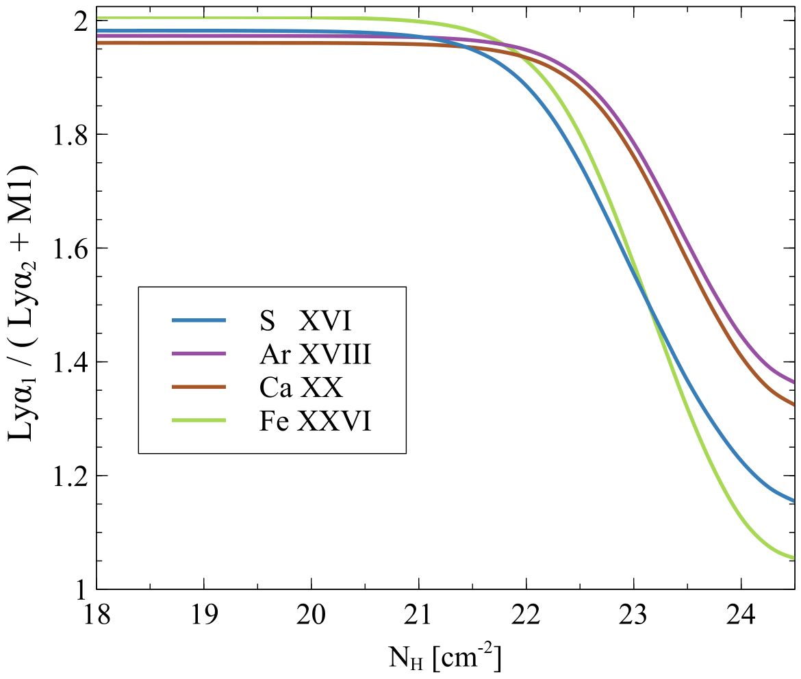

I am an astrophycist, currently working as a postdoctoral researcher at the Space Telescope Science Institute, which I joined in May 2024. I received my PhD from the University of Kentucky in December 2023.
My primary research goal is to understand the underlying physics (from cosmic chemical evolution to details of radiative transfer) of hot gaseous environments from optical to X-ray. I study the chemical evolution, the details of radiative transport, and the microphysical processes in astrophysical gases. I am a collaborator of the CLOUDY, a spectral synthesis software that simulates conditions in gaseous nebulae. I work closely with Gary J. Ferland and Peter van Hoof. My research at STScI focuses on understanding dust extinction in collaboration with Karl D. Gordon and Marjorie Decleir.
Research
My thesis work:

Resolving Hydrogenic Lyman Doublets: With the launch of nextgeneration telescopes such as XRISM, Euclid, Athena and many more, it is an ideal to time be a data and computational scientist in astronomy. The consequent challenges with the advent of these missions will be in building a data pipeline for the massive volume of data, and in modeling such high-resolution data. Despite the advances that have been made to the CLOUDY code in the past years, before this project CLOUDY had not taken into account the H-like exhibiting level splitting due to quantum fine-structure interactions (Bethe and Salpeter, 1957). This project improves the microphysical calculations conducted by CLOUDY by taking fine-structure splitting of the H-like ions into consideration. Such calculations alter predictions for the physical state of the gas by producing more accurate line strength predictions of the two Lyα components. This work will be the primary component of the 2025 release of CLOUDY.
Keeping up with an evolving database: Atomic and molecular data are required for the microphysical calculations conducted to simulate astrophysical plasmas. CHIANTI 7 is one such database used by the CLOUDY code, containing important electron excitation data required for the microphysical calculations. As the structure of the CHIANTI data has evolved with each new version, the latest CHIANTI 10 version has become incompatible with CLOUDY.
I recast data from the latest version of CHIANTI to a common format used by CLOUDY and other codes, using a Python script I developed. This solution allows CLOUDY to keep up with future changes to the CHIANTI database with no changes to its source code, (the script is open-access at https://gitlab.nublado.org/cloudy/arrack). This new reformatted database containing the updated CHIANTI 10 data was released with C23, providing improved line wavelengths and spectral line intensities.
Selective Grain Depletions in H II Regions: Atomic species in the ISM transition out of their gas phase mainly by condensing onto dust grains, a.k.a grain depletion. Although the phenomenon of grain depletions has long been known and studied, the physics of these depletions is still ambiguous. However, an accurate representation of the chemical evolution of the ISM is paramount to many other galactic processes including the observed spectra, stellar formation, and galactic evolution. I incorporated the Jenkins (2009) formalism into the widely used CLOUDY code to obtain a self-consistent set of dust depletions for the various elements.
I show that the depletion strength (F∗) significantly affects the intensity of strong emission lines and the thermal balance of the ionized gas. I also found that varying metallicity, ionization parameter, and depletion strength in H II regions produced significant yet degenerate variances in the emission-line spectra. Small changes in the grain abundance can be misinterpreted as changes in the metallicity. The spectral predictions obtained above were compared to a large sample of observed extragalactic star-forming regions obtained by the MaNGA (Mapping Nearby Galaxies at Apache Point Observatory) survey (Bundy et al., 2015). I concluded that the best fit for this sample of H II regions, was produced by using a depletion strength of F∗ ∼ 0.5 and adopting the N/O abundance ratio given in Schaefer et al. (2020). This work is part of the C23.00 release, and will have a broad impact on future investigations using CLOUDY to study observations.
Lyα optical depth and Lyα Escape & Destruction Probability: Resonance lines of abundant atoms have large optical depths in nebulae. So calculation of the expected line strengths for such lines must take into account scattering and absorption. The escape probability (β) approximation is a convenient way to treat the effects of radiative trapping, which appreciably diminishes the photon flux in these lines (Netzer et al., 1985). As CLOUDY’s uses grew and resonance lines have been split into the fine-structure components (Ferland et al., 2017; Chatzikos et al., 2023), the code required a conversion from line-center to mean Lyα optical depth. I found that this conversion had picked up an erroneous factor of π in CLOUDY’s calculation of Lyα escape and destruction probability.
This CLOUDY update has now been published as the C23.01 sub-release, succeeding C23.00 (Chatzikos et al., 2023). I found that the largest changes, as a result of this update, occurred for dusty clouds where H Lyα destruction is important. Since H Lyα is often the strongest line in the spectrum, significant changes in its physics will have consequences on other physical parameters.